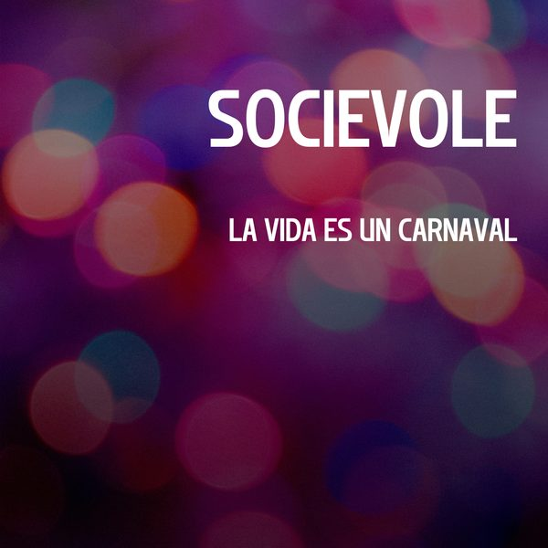

I 18 dischi
 1
Sound Of The UndergroundCrusy
1
Sound Of The UndergroundCrusy
 2
LifetimeTobiahs
2
LifetimeTobiahs
 3
mr uselessShygirl, SG Lewis
3
mr uselessShygirl, SG Lewis
 4
Better DayBruno Furlan
4
Better DayBruno Furlan

5 La Vida Es Un CarnavalSocievole 6
So Cold With ItNeon Steve
6
So Cold With ItNeon Steve
 7
FokkusOOTORO
7
FokkusOOTORO
 8
Thick like an X5NIKK
8
Thick like an X5NIKK
 9
Coming Home (Esox Remix)Plastik Funk & Jay Hardway
9
Coming Home (Esox Remix)Plastik Funk & Jay Hardway
 10
In The Dark (ft. Maria Mathea)KAAZE
10
In The Dark (ft. Maria Mathea)KAAZE
 11
DetroitSummum
11
DetroitSummum
 12
TomalaMark Di Meo & Fatboi
12
TomalaMark Di Meo & Fatboi
 13
Keep It RealBYOR & ARIA
13
Keep It RealBYOR & ARIA
 14
PhysiqueDon Diablo & Mearsy feat. RBZ
14
PhysiqueDon Diablo & Mearsy feat. RBZ
 15
Never be lonelyJax Jones & Zoe Wees
15
Never be lonelyJax Jones & Zoe Wees
 16
EnigmaMichael Feiner
16
EnigmaMichael Feiner
 17
LuminaAlex Nocera, Roy Batty
17
LuminaAlex Nocera, Roy Batty
 18
Who I Wanna Be (Rudeejay & Da Brozz Remix)DJ ROSS x ERIKA
18
Who I Wanna Be (Rudeejay & Da Brozz Remix)DJ ROSS x ERIKA
La tracklist
- 1 Sound Of The Underground Crusy Incorrect Music
- 2 Lifetime Tobiahs Mushroom Group – A Mushroom Music Recording
- 3 mr useless Shygirl, SG Lewis Because Music
- 4 Better Day Bruno Furlan Track ID
- 5 La Vida Es Un Carnaval Socievole Bootleg
- 6 So Cold With It Neon Steve House Call Records
- 7 Fokkus OOTORO Thrive Music
- 8 Thick like an X5 NIKK Hexagon
- 9 Coming Home (Esox Remix) Plastik Funk & Jay Hardway FUNK YOU Musik
- 10 In The Dark (ft. Maria Mathea) KAAZE Dim Mak Records
- 11 Detroit Summum Confession Records
- 12 Tomala Mark Di Meo & Fatboi Some Other Records
- 13 Keep It Real BYOR & ARIA Spinnin' Records
- 14 Physique Don Diablo & Mearsy feat. RBZ Spinnin' Records
- 15 Never be lonely Jax Jones & Zoe Wees Polydor Records
- 16 Enigma Michael Feiner Starbuster
- 17 Lumina Alex Nocera, Roy Batty Gas Records
- 18 Who I Wanna Be (Rudeejay & Da Brozz Remix) DJ ROSS x ERIKA Bang Record